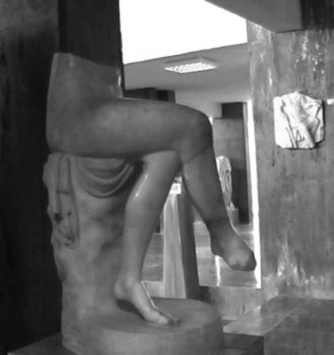

Kral Teseus'un yaşadığı sayısız serüvenler ve gösterdiği kahramanlıklar; örneğin Kalidon kentinde o ünlü Domuz Avı'na katılması ve gene en gözüpek kahramanların Argos gemisiyle başlattıkları Altın Post'u ele geçirme seferine çıkması, onu binyıllar boyu dillerden düşürmedi... Ne var ki son olarak Amazonlar denen o ünlü savaşçı kadınların ülkesine gidip orada âşık olduğu bir Amazon kadını kaçırıp Atina'ya dönmesiyle birlikte, Teseus'un yaşamının en acılı ve son dönemeci de başlamış oldu. Çünkü bu aşamadan sonra olayların akışı, onun istenci dışındaydı artık...
Teseus'un zorla kaçırıp Atina'ya getirdiği Antiyope (Antiope) adlı bu Amazon sevgilisinden, Hippolitos (Hippolytos) adında bir oğlu oldu... Bir süre sonra da Amazonlar, Antiyope'yi geri almak için Yunanistan'a savaş açtılar... Bunun üzerine Teseus, oğlu küçük Hippolitos'u başka bir kentte oturan akrabalarının yanına gönderdi. Hem bakımı, hem eğitimi için... Savaşı kazanan Amazonlar da Antiyope'yi alıp götürdüler...
Aradan yıllar geçti. Artık gitgide yaşlanan kral Teseus, Girit kralı Minos'un kızı Faydra (Phaidra) ile evlendi. Faydra, bir zamanlar Naksos sahillerinde kendisinin tek başına bırakıp kaçtığı güzel Aryadne'nin kız kardeşiydi! Teseus onunla sessiz sedasız, kendi halinde bir yaşam sürmeye başladı... Saraydan uzak başka bir kentte yaşayan oğlu Hippolitos da geçen yıllar içinde çok yakışıklı bir delikanlı olup çıktı.
Hippolitos, özel bir yaşam yöntemi seçmişti kendine. Çoğunlukla kırlarda, ormanlarda geçiriyordu günlerini. Tanrıça Artemis de onun tek tapındığı tanrıçaydı. Çünkü o da Artemis gibi temiz, dokunulmamış kalmak istiyordu. O yüzden bir kadınla birlikte olmak düşüncesi bile onu çılgına döndürüyordu!.. Bu konuda tanrıçası Artemis'le sık sık dertleşiyor; kendisinin de hep dokunulmamış, temiz kalabilmesi için ondan sürekli yardım istiyordu. Avcılık, koşu gibi sporlar; tıpkı tanrıçası Artemis'inki gibi onun da günlük yaşamının en önemli uğraşlarıydı... Çok doğal olarak Hippolitos, aşk tanrıçası Afrodit'i hiç sevmiyor; hatta onun simgelediği aşkı kötülüyordu her yerde. Hippolitos'un bu tutumu, tanrıça Afrodit'i zıvanadan çıkarmaya çoktan yetip arttı!..
Bir gün kral Teseus, yanına karısı güzel Faydra'yı da alıp yıllardır görmediği oğlu Hippolitos'un yanına gitti. Onu görür görmez de babalık duyguları coştukça coştu. Birbirleriyle hemen canciğer kaynaştılar; sonra da hep birlikte Atina'ya döndüler. Ne var ki tanrıça Afrodit de bu arada yapacağını yaptı: Eros aracılığıyla aşk okları salıp kraliçe Faydra'yı, üvey oğlu Hippolitos'a deli divane âşık etti! Artık günden güne üvey oğluna duyduğu ve utanç verici bulduğu aşkla yanıp tutuşmaya başladı güzel Faydra!.. Haliyle bu duygularını kimseye açamıyordu... Bu yüzden de içi karardıkça kararıyordu. Yalnızca yaşlı dadısı duyuyordu onun içinde gürleyen o sessiz volkanı... Bir süre sonra Faydra, kendini deli divane eden bu yasak aşkı artık tek başına taşıyamayacağını anladı; kimselere duyurmadan, bu kimselere açamadığı sırla canına kıymaya karar verdi. Yaşlı dadısı onun niyetini anlayınca, apar topar Hippolitos'un yanına gitti: "Bak delikanlı," dedi ona. "Üvey anan Faydra sana deli divane âşık! Kimselere de söylemiyor bunu! Bu yüzden canına kıyacak şimdi! N'olur, ona biraz yakınlık göster. Onu kurtar!.."
Aşkın adından bile tiksinen Hippolitos; bu sözleri duyunca, kulaklarını kapatıp apar topar bahçeye fırladı! Dadı da onun ardından... Bahçenin bir köşesine çekilip ateşli ateşli konuşurlarken kendilerine çok yakın yerde oturan Faydra'yı göremediler... Hippolitos; "Sen ne demek istiyorsun?" diye gürledi dadıya. "Demek babamı kandırıp üvey anamla benim ilişki kurmamı istiyorsun, öyle mi? Ben bütün kadınlardan da, onların aşklarından da iğreniyorum!.." Bu sözlerden sonra yeniden odasına döndü Hippolitos...
Yaşlı dadı tam da o anda görebildi Faydra'yı ve iliklerine dek ürperdi. Az önce konuşulanları duymuştu Faydra!.. Bu yüzden de gözleri aniden büyüyüp dumanlanmış, bir başka aleme çevrilivermiş gibiydi... Faydra karşılıksız ve yasak aşktan değil, kadınlık onuruna vurulan bir çeşit tekmeden yıkılmıştı bir anda!.. Ama öcünü de yaman alacaktı, delice sevdiği bu Hippolitos denen üvey oğlundan!..
Bir süre önce saraydan ayrılan kral Teseus geri döndüğünde karısı Faydra'nın ölüsü ve yanında bıraktığı bir mektupla karşılaştı. Mektubu okuyunca da hemen bahçeye attı kendini ve çılgınca bağırmaya başladı: "Herkes duysun! Benim öz oğlum benim karımı lekelemiş! Tanrı Poseydon, benim çığlığımı duy!.. Onu cezalandır!.." Çığlıkları duyan saray görevlileriyle birlikte Hippolitos da bahçeye koştu. Babasına olup bitenlerin nedenini sordu. "Üvey ananı kirletirsin, sonra da bilmezlikten gelirsin, ha!.." deyip onu hemen kovdu saraydan... Şaşkına dönen Hippolitos; "Ama şunu bil ki baba, ben ona elimi bile sürmedim!.." gibilerden bir şeyler söylemeye çalıştı... Sonra da arabasına atlayıp son hızla uzaklaştı saraydan...

Oturan Afrodit heykeli (Afrodisyas Müzesi)
Hippolitos deniz kıyısından geçerken, denizler tanrısı Poseydon da, kral ailesine olan eski bir kızgınlığının acısını çıkarmak üzere bir deniz canavarı gönderdi hemen. Canavar, Hippolitos'un atlarını ürküttü ve gemi azıya alan atlar, son hızla koşaraktan Hippolitos'u arabadan savurup attılar...
O anda tanrıça Artemis geldi saraydaki kral Teseus'un yanına; "Oğlun Hippolitos'un bir suçu yok bu işte," dedi kendini göstermeden. "Karın çılgınlar gibi tutkundu ona. Bu çılgınlığıyla öldürdü kendini. Bıraktığı satırlar da yalandı..." Az sonra da can çekişen, kan revan içindeki oğlu Hippolitos'u getirdiler içeri. Bir şeyler mırıldanıyordu yalnızca. "Ben suçsuzum tanrıçam Artemis," diyordu durmadan. Babasını tanıyınca da; "Baba, bu işte senin de suçun yok..." diye fısıldadı... Sonra da Hades'in dönülmez ülkesine doğru çevirdi gözlerini...
Teseus, oğlu Hippolitos'la karısı Faydra'yı yitirdikten sonra artık fazla yaşamadı... Atinalılar büyük bir anıtmezar yaptılar onun için. Yüzyıllar süresince de bu anıtmezar; yoksulların ve isyancıların sığınağına dönüştü...